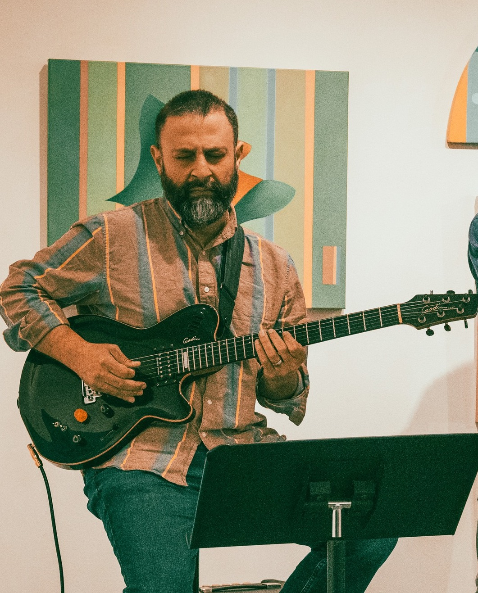
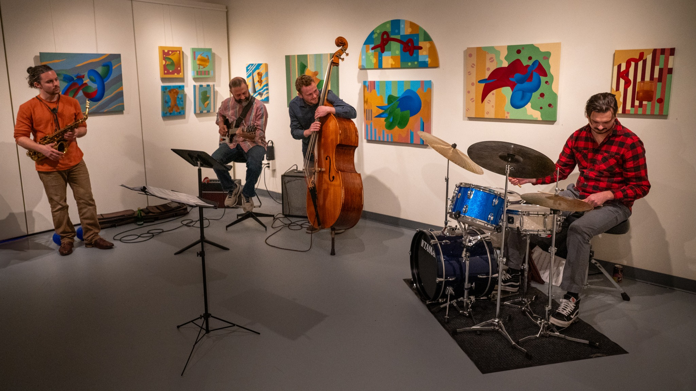

About
A life shaped by immigration, music, systems and trust.
I’m Rahib Amin — a product strategist, founder, and jazz guitarist working across technology, trust, platform strategy, and creative practice.


Personal origin
Where the story begins.
I was born and raised in Saudi Arabia to Pakistani immigrant parents, whose own story began with migration in the aftermath of the 1947 partition of India and Pakistan.
Growing up, life was shaped by uncertainty. My father worked as an accountant under a sponsorship system, and my mother did everything she could to create opportunities for us, from running small businesses to teaching and working service jobs.
I was always curious, often questioning, and at times struggled within systems that didn’t quite fit how I thought. Music became my anchor, especially jazz, where discipline, expression, and honesty all came together.
That foundation, along with becoming a husband and father, grounded me and shaped how I move through the world today.
Professional journey
A non-linear path into technology.
My professional path has been non-linear and largely self-directed. I started in retail and hospitality, but quickly realized I needed to build something more meaningful for both my family and myself.
While studying Management Information Systems at Eckerd College, I eaerned the title; General Manager of WECX, the college radio station. That experience taught me early that systems are never purely technical; they are socio-economic constructs, and their behavior determines their impact.
After college, I moved through retail and hospitality leadership before transitioning deeper into technology through hands-on roles across business systems, customer support, product ownership, API design, fintech, healthcare technology, and platform environments. This path forced me to understand systems end-to-end; in theory and in practice.
Over time, I moved into roles as a technical product manager, platform strategist, and consultant, working with organizations at different stages and learning that no system or solution is ever one-size-fits-all.
Across all of that, one pattern became clear: the hardest problems are rarely only technical. They depend on clear relationships, sound decisions, reliable systems, and the ability to establish trust in a meaningful way.
The guiding principle behind my work is trust: earned through relationships, demonstrated through action, and strengthened by the way people and systems take responsibility for better outcomes.
Next